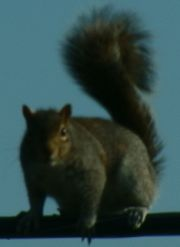

| Interesting Facts about Squirrels |
In addition to interesting facts about squirrels, this page includes a description of the differences between the assumptions made in the population model applet and the real thing. At the end of the page you'll find references to other sites to learn more about squirrels.

Species -- There are about 300 varieties of squirrels around the world. In North America there are ten. Examples are the red/brown squirrels that live in evergreen trees and eat seeds of pinecones and the gray squirrel which lives in woods of oaks, ashes, and beeches and mainly eats beech nuts and acorns.
The squirrels used in this lesson are the Eastern Gray squirrels whose scientific name is Sciurus carolinensis.
Sizes -- Their sizes vary considerably. For example, the gray squirrel can be up to three time as large as the red squirrel but smaller than a fox squirrel. A recently born gray squirrel is about one inch long and weighs as little as half and ounce to one ounce. The size of an adult gray squirrel is about 18 inches and can weigh up to a pound or more.
Where do they live? Squirrels typically live in trees -- in holes in the trunk, or in treetop crow's nests. The homes in the treetops are called dreys and sometimes consist of two rooms and a nursery!
Reproduction -- Squirrels start mating when they are a year old. It takes about six weeks from the time the squirrels mate until the baby squirrels, called kittens, are born. Twice a year, in the spring and at the end of the summer, the female squirrel has two to five kittens.
Some species of squirrels do reproduce only once a year and that is one of the assumptions used in the program.
Eating -- During their first seven weeks they will nurse milk, and then they will eat nuts, acorns, wheat, fruit, bird's eggs, and mushrooms. Sometimes they will also eat leaves, berries, seeds, oak buds, and corn as well as insects, moths, bird eggs and nestling birds. What they eat depends on the time of year. For example, nuts and acorns are typically eaten during the fall. A squirrel needs about two pounds of food a week. If it can't find it, it will move. When they leave their nests in the summer, young squirrels sometimes need to move to new homes in less crowded woods. The old squirrels drive them away.
Squirrels will typically gather and save nuts and acorns during the last week of autumn, however, they don't eat most of them. Squirrels need calcium in their diet. Calcium is a mineral necessary for the squirrels to keep healthy teeth to be able to bite into an acorn. Without strong teeth, they can starve to death.
One assumption made in the program is that each squirrel needs about 16 acorns per week or 825 throughout the year. Acorns are not even available all year round.
How old do they live? Squirrels can live up to 10 or 12 years. After six years, they are considered old squirrels.
In the program, all squirrels that die of old age die when they are 12 years old.
Predators -- Squirrels in early spring savor the flowers and buds of the wildflowers while risking sudden death by swooping hawks. The typical squirrel predators are, in addition to the red-tailed hawks, wildcats, foxes, owls, raccoons, and opossums.
Causes of death -- In addition of dying by being attacked by their natural predators, they can also die from man, traffic, and natural death.
References --
[Reference 1] -- http://spot.colorado.edu/~halloran/sqrl.html - The Squirrel Almanac. A great site with nice photos and descriptions
[Reference 2] -- http://www.squirrels.org - This site has tons and tons of fun and interesting stuff about squirrels
[Reference 3] -- http://www.rhowick.com:80/squirrelcam.html-ssi - Site with live pictures of a squirrel.
[Reference 4] -- http://personal.inet.fi/private/peter.ekqvist/squirrel.htm - Probably some of the best squirrel pictures around and they come all the way from Finland!
Last Updated:
Arcytech
Java Home
Page
Provide
Feedback